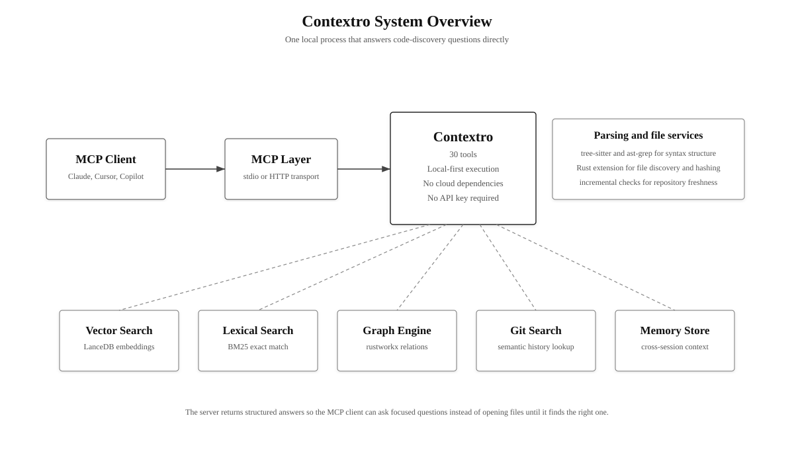
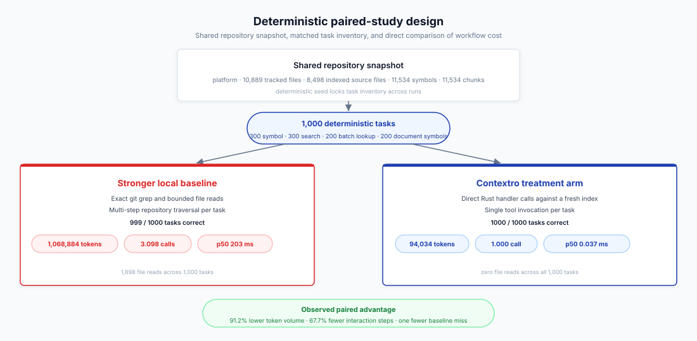
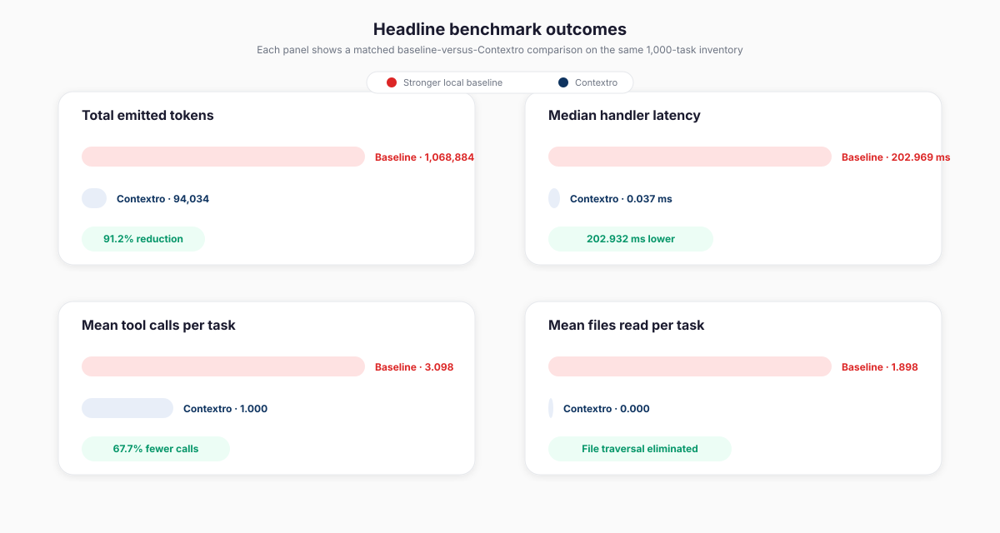

1. Introduction
Most coding agents still locate code the expensive way. They grep broadly, open several files, inspect mostly irrelevant windows, and only then recover the symbol or file they needed. That workflow wastes tokens because it sends exploration traces rather than direct answers.
Contextro is built to replace that exploration trace with targeted repository intelligence. It exposes indexed search, symbol lookup, code operations, history lookup, and memory through a local MCP server so a client can ask for a definition, a ranked exact-search result, or a file-local symbol list directly.
The earlier Contextro paper is no longer the right description of the system. The current implementation is Rust end to end, and the benchmark in this paper is produced by a real Rust study harness that invokes the current retrieval handlers directly. No Python runtime and no legacy ctx_fast path remain in the evaluated system.
- We report the first controlled 1,000-task benchmark for the current pure-Rust Contextro implementation on the private
platformrepository. - We compare Contextro against a stronger scripted local baseline based on exact
git grepand bounded file reads, not against a simulator. - We state capability limits explicitly: graph-dependent tasks are excluded because the fresh TypeScript-heavy index contained zero call relationships.
3. Current System
Contextro is now implemented as a pure-Rust local MCP server. The workspace separates indexing, engines, parsing, memory, git helpers, tool handlers, and the server binary across focused crates, but the operational surface is still a single local binary. For this study, the important detail is architectural continuity: the benchmark harness reuses the same Rust retrieval paths that the server exposes, so the benchmark and the product measure the same code path rather than two different implementations.

3.1. Implementation Snapshot
| Layer | Current implementation | Role in this study |
|---|---|---|
| Runtime and transport | Rust binaries in crates/contextro-server with rmcp, tokio, and axum | Expose the local MCP server and the contextro-study benchmark harness |
| Indexing | contextro-indexing pipeline over supported source files | Built a fresh 8,498-file index with 11,534 symbols and 11,534 chunks |
| Lexical retrieval | In-memory Tantivy BM25 index | Powers the 300 exact-search tasks in the treatment arm |
| Symbol lookup | In-memory Rust graph and name indexes | Powers exact find_symbol and grouped lookup tasks |
| Code operations | Rust code handlers plus TreeSitterParser interface | Powers lookup_symbols and get_document_symbols |
| Current JS/TS limitation | The current parser path does not populate calls for TypeScript or JavaScript symbols on this repo | Produced 0 graph relationships, so graph-dependent tasks were excluded |
3.2. Evaluated Tool Surface
| Study category | Treatment tool path | Tasks | Deterministic success condition |
|---|---|---|---|
| Symbol discovery | find_symbol(name, exact=true) | 300 | The expected file path appears in the returned symbol set |
| Exact search | search(query, mode="bm25", limit=5) | 300 | The expected file path appears in the ranked results |
| Batch lookup | code(operation="lookup_symbols") | 200 | All expected file paths for the three-symbol batch appear |
| Document symbols | code(operation="get_document_symbols") | 200 | All expected symbol names appear in the file-level symbol list |
| Excluded graph tasks | find_callers, find_callees, impact, relationship-rich explain | 0 | Explicitly excluded because the fresh index contained zero graph relationships |
The study harness uses the current Rust handlers directly. An older JavaScript experiment script in the repository is only a simulator and is not used for any headline claim in this paper.
4. Benchmark Methodology
The study follows a paired, deterministic, two-arm design. Every task is executed once with a stronger scripted local baseline and once with Contextro against the same repository snapshot. The task generator draws the inventory from indexed ground truth rather than from free-form human prompts, so correctness can be scored mechanically.

4.1. Study Design
The stronger local baseline uses exact git grep plus bounded file windows. Symbol-discovery tasks read up to two candidate files after a grep hit; exact-search tasks read up to three; batch-lookup tasks run three exact greps and read one primary file window for each symbol; document-symbol tasks open a single file excerpt directly. The treatment arm performs exactly one Contextro tool call per task against a pre-indexed repository state.
The task inventory contains 300 symbol-discovery tasks, 300 exact-search tasks, 200 batch-lookup tasks, and 200 document-symbol tasks. Batch and document-symbol tasks are intentionally stricter than single-file lookups because all expected files or symbols must appear for the task to count as correct.
4.2. Repository Under Test
| Property | Value |
|---|---|
| Benchmark target | Private production repository platform |
| Tracked files | 10,889 |
| Dominant tracked extensions | 5,545 .ts files and 2,905 .tsx files |
| Indexed source files | 8,498 |
| Extracted symbols / chunks | 11,534 / 11,534 |
| Graph nodes / relationships | 11,534 / 0 |
| Task distribution | 300 symbol discovery, 300 exact search, 200 batch lookup, 200 document symbols |
| Fresh index build | 0.45 s |
| BM25 build | 34.3 ms |
| Graph build | 13.5 ms |
| Benchmark host | Apple M4, 16 GB RAM, macOS 26.4.1 |
4.3. Metrics and Deterministic Scoring
| Measurement | Definition | Purpose |
|---|---|---|
| Success | Expected file or symbol strings must appear in the rendered output; batch and document tasks require all expected items | Removes subjective judging and keeps the benchmark reproducible |
| Token estimate | tiktoken-rs with cl100k_base applied to each arm's rendered output | Provides an apples-to-apples context-cost comparison |
| Handler latency | Wall-clock milliseconds around each scripted arm call | Measures retrieval overhead inside the harness on a pre-indexed repository |
| Tool calls | Count of grep and read operations in the baseline versus one MCP call in the treatment arm | Captures workflow complexity |
| Files read | Count of explicit file windows opened by the scripted baseline | Measures raw code traversal cost |
| Excluded capabilities | Graph-dependent tasks are removed when the fresh index has zero relationships | Prevents us from claiming performance for surfaces the current parser did not support on this repo |
This benchmark is intentionally not an autonomous coding benchmark. It studies retrieval, symbol navigation, and file-local structure under deterministic scoring. That choice narrows the claim, but it also makes the result reproducible and automatically checkable.
5. Results
5.1. Headline Outcomes
The full 1,000-task study produced a consistent result: Contextro reduced the amount of text emitted by the discovery workflow and did so without sacrificing correctness. Total token volume fell from 1,068,884 in the stronger local baseline to 94,034 in Contextro, a 91.2% reduction. The baseline succeeded on 999 tasks; Contextro succeeded on all 1,000.
Interaction cost also collapsed. The scripted baseline averaged 3.098 tool invocations and 1.898 file reads per task, while the Contextro arm issued exactly one tool call and read no files inside the study harness. Median handler latency fell from 202.969 ms to 0.037 ms, though that latency should be interpreted carefully as direct handler timing on a pre-indexed local repository rather than end-to-end agent wall clock.

| Metric | Stronger local baseline | Contextro | Observed change |
|---|---|---|---|
| Success rate | 99.9% (999/1000) | 100.0% (1000/1000) | Contextro completed every task in the inventory |
| Total tokens | 1,068,884 | 94,034 | 91.2% reduction |
| Mean tokens per task | 1,068.9 | 94.0 | 91.2% reduction |
| Median handler latency per task | 202.969 ms | 0.037 ms | Direct local handler timing dropped by 202.932 ms |
| P95 handler latency per task | 624.947 ms | 0.094 ms | The long tail remained entirely on the baseline side |
| Mean tool calls per task | 3.098 | 1.000 | 67.7% fewer interaction steps |
| Mean files read per task | 1.898 | 0.000 | Explicit file reads were eliminated in the treatment arm |
5.2. Results by Task Category
All four categories favored Contextro on token volume. The largest reduction appeared in symbol discovery (94.5%), where the treatment arm can usually answer the query with a single short symbol record. The smallest reduction appeared in document-symbol tasks (86.8%), which is expected because those tasks require the system to emit a list of file-local symbol names rather than a single location.
Latency splits by category are also informative. The biggest latency gain appears in batch lookup because the baseline must perform three exact greps and three file reads. Document-symbol tasks are the exception: the baseline is already close to direct file access, so latency is roughly equal there even though Contextro still reduces output size materially.
| Category | Tasks | Success (baseline / Contextro) | Tokens (baseline / Contextro) | Reduction | Median handler latency (baseline / Contextro) |
|---|---|---|---|---|---|
| Symbol discovery | 300 | 100.0% / 100.0% | 239,344 / 13,174 | 94.5% | 204.238 ms / 0.016 ms |
| Exact search | 300 | 99.7% / 100.0% | 256,453 / 20,986 | 91.8% | 202.114 ms / 0.066 ms |
| Batch lookup | 200 | 100.0% / 100.0% | 278,959 / 20,947 | 92.5% | 612.560 ms / 0.029 ms |
| Document symbols | 200 | 100.0% / 100.0% | 294,128 / 38,927 | 86.8% | 0.046 ms / 0.045 ms |
5.3. Failure Analysis
The stronger local baseline missed exactly one task: search_0553, an exact-search query for DataGrid. The baseline recovered the symbol name, but its grep-plus-window path did not surface the expected target file apps/app/src/features/data-grid-live/components/data-grid/data-grid.tsx. Contextro returned the expected file in the ranked result set. This is a small miss, but it is useful because it shows where repeated identifier names still make a multi-step grep workflow brittle even under deterministic scripting.
The more important qualitative result is the absence of silent degradation in the treatment arm. Contextro was correct on every task category that the harness exercised. That does not prove broad coding superiority, but it does support the narrower claim that the current Rust implementation can answer deterministic discovery tasks compactly and reliably on this repository.
6. Discussion
The central result is a workflow result, not a marketing one. When the retrieval layer can answer a discovery question directly, the agent no longer needs to spend most of its context budget on exploratory file traversal. The 91.2% token reduction in this study is therefore best understood as a reduction in exploration waste: fewer grep traces, fewer file windows, and fewer intermediate steps.
The pure-Rust transition matters for the credibility of that claim. The current server, the current handlers, and the current benchmark harness all live in the same Rust codebase. The numbers in this paper do not come from the earlier Python-era architecture and do not depend on the older JavaScript simulator. They describe the current MCP as it exists now.
The category breakdown also keeps the result honest. Document-symbol tasks do not show dramatic latency gains because the baseline is already close to direct file access. Contextro still helps there because the response is more compact, but not every category should be expected to improve in the same way.
7. Limitations
This paper has four important limitations. First, it studies a single private repository, so the result should be read as strong evidence on platform, not as a universal repository claim. Second, the benchmark uses a pre-indexed local repository and measures direct handler latency, not full end-to-end agent runtime with model reasoning and transport overhead. Third, the task inventory is deterministic and retrieval-oriented rather than a full autonomous coding benchmark.
Fourth, and most importantly, the current TypeScript and JavaScript parser path produced zero call relationships on this repository. That forced us to exclude find_callers, find_callees, impact, and relationship-rich explain tasks from the study. The paper therefore should not be read as evidence that the current system already delivers graph-quality answers on TypeScript-heavy repositories. Fixing that parser limitation is the most important technical follow-up after this benchmark.
The benchmark also favors exact identifier retrieval. The 300 exact-search tasks use search(mode="bm25") because that path admits deterministic scoring from indexed ground truth. That makes the result clean and reproducible, but it leaves open a separate question about free-form natural-language search quality, which deserves its own study.
8. Availability and Reproducibility
The primary artifact bundle for this paper lives in docs/publication/. The four new platform-study JSON files are the machine-readable evidence for every headline number in the manuscript. Older paired-study and public-proxy artifacts remain in the directory for historical reference, but they are not the evidence base for the claims in this paper.
8.1. Artifact Package
| Artifact | Description |
|---|---|
contextro-paper.html | Printable manuscript source for the current Rust-era paper |
platform-1000-study-config.json | Benchmark configuration, tokenizer metadata, and index snapshot |
platform-1000-study-tasks.json | Full deterministic 1,000-task inventory |
platform-1000-study-results.json | Per-task, per-arm outcomes for all 2,000 executions |
platform-1000-study-summary.json | Aggregate results cited throughout this paper |
8.2. Rerun Command
cd crates
cargo run --release -p contextro --bin contextro-study -- \
--codebase <path/to/your/codebase> \
--output-dir <path/to/output/directory> \
--tasks 10008.3. Verification Environment
| Field | Value |
|---|---|
| CPU | Apple M4 |
| Memory | 16 GB RAM |
| Operating system | macOS 26.4.1 |
| Tokenizer | tiktoken-rs with cl100k_base |
9. Conclusion
On the private platform repository, the current pure-Rust Contextro implementation makes repository discovery substantially cheaper. In a deterministic 1,000-task study, it cut token volume by 91.2%, collapsed the number of interaction steps to one call per task, and completed every task in the inventory. Those are meaningful retrieval wins, even though the benchmark does not attempt to measure full autonomous coding quality.
The next step is clear. The benchmark surfaced a real parser limitation on TypeScript-heavy repositories: graph relationships are currently absent, so graph-native tasks cannot yet be evaluated honestly. Solving that limitation should be the priority before claiming broad impact-analysis or caller-tracing performance on JavaScript and TypeScript codebases.
References
- Anthropic. Model Context Protocol. 2024. Available at
https://modelcontextprotocol.io/. - MIT Libraries. Specifications for Thesis Preparation. 2024. Available at
https://libraries.mit.edu/distinctive-collections/thesis-specs/. - Robertson, Stephen, and Hugo Zaragoza. "The Probabilistic Relevance Framework: BM25 and Beyond." Foundations and Trends in Information Retrieval 3(4):333-389, 2009.
- Lewis, Patrick, et al. "Retrieval-Augmented Generation for Knowledge-Intensive NLP Tasks." NeurIPS, 2020.
- Brunsfeld, Max. tree-sitter. Available at
https://tree-sitter.github.io/tree-sitter/. - Nature. Formatting Guide for Articles. Available at
https://www.nature.com/nature/for-authors/formatting-guide.
Appendix A. Experiment Configuration
Table 9 collects the configuration values that define the benchmark. These fields are duplicated in platform-1000-study-config.json.
| Field | Value |
|---|---|
| Requested tasks | 1,000 |
| Generated tasks | 1,000 |
| Task families | 300 symbol discovery, 300 exact search, 200 batch lookup, 200 document symbols |
| Tracked files | 10,889 |
| Indexed files | 8,498 |
| Total symbols / chunks | 11,534 / 11,534 |
| Graph relationships | 0 |
| Index build times | 0.45 s indexing, 34.3 ms BM25 build, 13.5 ms graph build |
| Baseline strategy | Exact git grep plus bounded file windows |
| Treatment tools | find_symbol, search(mode="bm25"), code.lookup_symbols, code.get_document_symbols |
Appendix B. Tool Contracts Used in the Study
This appendix summarizes only the four tool paths exercised in the 1,000-task benchmark. The benchmark interacts with the handlers directly, but the structures below match the externally visible MCP surface.
| Tool | Inputs used here | Primary output fields checked | Role |
|---|---|---|---|
find_symbol | name, exact=true | symbols[].file, symbols[].name, symbols[].line | Exact definition discovery |
search | query, limit=5, mode="bm25" | results[].file, results[].name, results[].score | Ranked exact-identifier retrieval |
code(operation="lookup_symbols") | symbols list | symbols[].file, symbols[].name, symbols[].line | Grouped three-symbol lookup |
code(operation="get_document_symbols") | file_path | symbols[].name, symbols[].line, symbols[].signature | File-local symbol inventory |
Appendix C. Category-Level Interaction Costs
Table 11 reports interaction-heavy details aggregated from platform-1000-study-results.json.
| Category | Baseline mean tool calls |
Contextro mean tool calls |
Baseline mean files read |
Contextro mean files read |
Baseline p95 latency |
Contextro p95 latency |
|---|---|---|---|---|---|---|
| Symbol discovery | 2.763 | 1.000 | 1.763 | 0.000 | 229.197 ms | 0.032 ms |
| Exact search | 2.897 | 1.000 | 1.897 | 0.000 | 219.246 ms | 0.117 ms |
| Batch lookup | 6.000 | 1.000 | 3.000 | 0.000 | 669.866 ms | 0.063 ms |
| Document symbols | 1.000 | 1.000 | 1.000 | 0.000 | 0.116 ms | 0.155 ms |